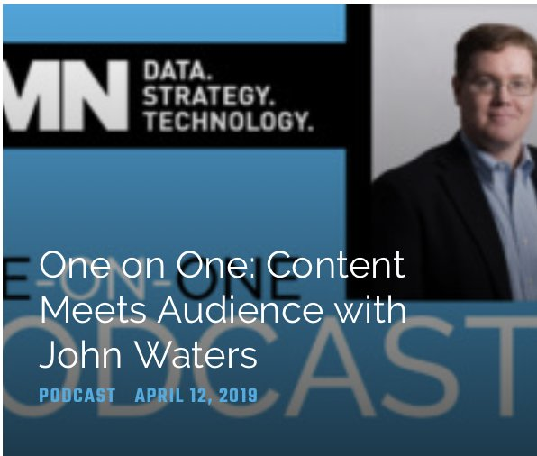

One on One: Content Meets Audience with John Waters
John Waters on how AnyClip is using content to find audiences

What we talked about
Kim Davis of DMN talks with John about AnyClip's AI engine, which looks at the video itself rather than its title, comments or past history, and generates metadata in real time. John explains how that lets AnyClip tag content down to three levels of the IAB taxonomy, apply brand safety models, and build custom categories for advertisers, like finding every celebration moment in March Madness footage for a tissue brand.
From there they get into why brand safety is harder in video, how each brand has to decide what content it's comfortable sitting next to, and why contextual targeting holds up as privacy rules tighten. It reaches people while they're engaged with a topic, works on shared devices, and skips the creepy factor of ads that follow you around. They close on ads.txt and GDPR, and why neither one actually solves brand safety.